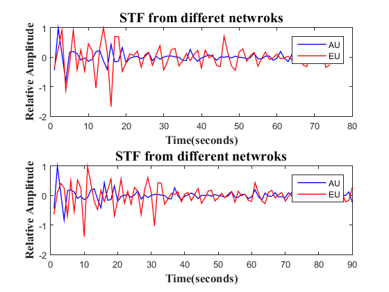

Contents
close all clear all AU = load('beam_0.2_5Hz_AU.txt'); EU = load('beam_0.2_5Hz_EU.txt'); index = epicenter_index(32,35,73,75,34.5239,73.64,0.02); %epicentre index. Found using epicentre_index.m function win = 10; Sign = []; corr = []; dt = []; %read crosscorr_align for usage of crosscorr and lines 16 to 25 [R t] = crosscorr(AU(index,1:win)'./max(AU(index,1:win))',EU(index,1:win)'./max(EU(index,1:win))'); % R -> XCF, t-> time lag [r dt] = max(abs(R)); r = R(dt); if (r < 0) sign = -1; else sign = 1; end e_lat = []; e_long = []; for lat = 32:0.02:35 for long = 73:0.02:75 e_lat = [e_lat;lat]; e_long = [e_long;long]; end end [m n] = size(AU); n = n-dt; AU_corr = []; EU_corr = []; for i = 1:1:m %cuts part of the seismogram (cut_window was not working) % We are taking AU as the reference trace here, so time lag is zero for AU. % Hence we will have all the elements from AU, except those which don't % correspond to any value for EU AU_corr(i,1:n) = AU(i,1:n); % EU has a time lag dt, so we are taking the elements starting from dt till the end EU_corr(i,1:n) = EU(i,dt:dt+n-1)*sign; end
Alignment has been done
This part is just for visualisation
subplot(2,1,1); plot( AU_corr(index,:)./max( AU_corr(index,:) ),'b','LineWidth',1); hold on plot( EU_corr(index,:)./max( EU_corr(index,:)),'r','LineWidth',1); legend('AU','EU') xlabel('Time(seconds)','FontWeight','bold','FontSize',13,'FontName','Times'); ylabel('Relative Amplitude','FontWeight','bold','FontSize',13,'FontName','Times'); title(['STF from differet netwroks'],'FontWeight','bold','FontSize',15,'FontName','Times'); subplot(2,1,2) plot( AU(index,:)./max( AU(index,:) ),'b','LineWidth',1); hold on plot( EU(index,:)./max( EU(index,:)),'r','LineWidth',1); legend('AU','EU') xlabel('Time(seconds)','FontWeight','bold','FontSize',13,'FontName','Times'); ylabel('Relative Amplitude','FontWeight','bold','FontSize',13,'FontName','Times'); title(['STF from different netwroks'],'FontWeight','bold','FontSize',15,'FontName','Times');
Calculating the energy for each grid point
beam_sum_corr = (AU_corr.^2)+(EU_corr.^2); % we are squaring the amplitude to convert it to energy h=fspecial('average',[1 1]); %smoothing the beam b_corr=filter2(h,beam_sum_corr); beam_sum_uncorr= (AU.^2)+(EU.^2); h=fspecial('average',[1 1]); b_uncorr=filter2(h,beam_sum_uncorr);